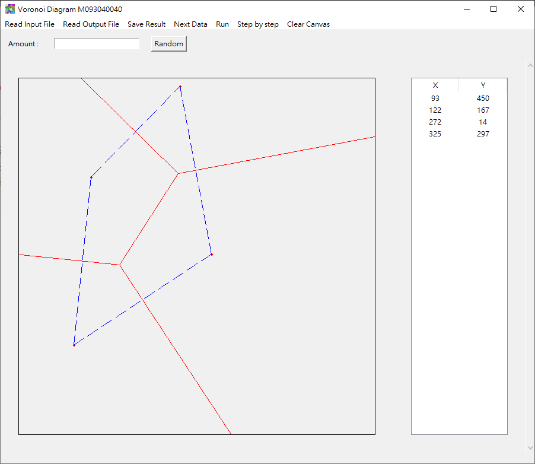
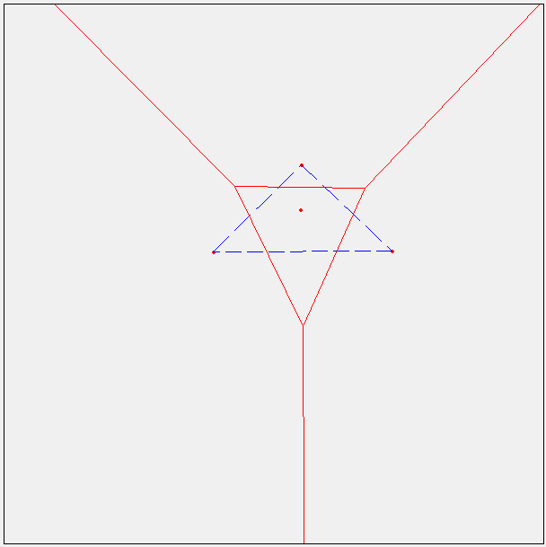

軟體規格書
輸入
輸出
- 輸入的座標點：P x y // 每個點佔一行，兩整數 x, y 為座標。
- 線段：E x1 y1 x2 y2 // (x1, y1) 為起點，(x2, y2) 為終點，其中 x1≦x2 或 x1=x2, y1≦y2
- 座標點排列在前半段，線段排列在後半段。座標點以 lexical order 順序排列（即先排序第一維座標，若相同，則再排序第二維座標；線段亦以 lexical order 順序排列。
- 輸出文字檔案範例：
P 193 64
P 193 370
P 283 200
E 0 34 193 161
E 0 363 193 261
E 193 161 193 261
E 193 161 437 0
E 193 261 600 476
畫面
功能介紹
- Read Input File: 讀取輸入檔案
- Read Ouput File: 讀取輸出檔案
- Save Result: 儲存結果
- Next Data: 讀取下一筆資料
- Run: 直接執行
- Step by step: Step by step，每次 merge 之前暫停
- Clear Canvas: 清空畫布
- Random: 產生輸入的點數
介面介紹
- 左邊方框為 Voronoi Diagram 顯示畫布
- 右邊為目前畫布中的點，以 lexical order 順序排列
測試方法
- 直接在畫布上點選
- 隨機產生點
- 讀取輸入檔案
測試情形
- 小於 3 點 : 直接解
- 4 ~ 6 : Divide, Merge 一次
- 7 ~ 12 : Divdie, Merge 兩次
- 大於 12 點 : Divdie, Merge 多次
軟體說明
繪製點方式
- 在畫布區 (紅色方框內) 點擊滑鼠左鍵
- 輸入想產生的點數，並點選「Random」按鈕
- 點選「Read Input File」 並選取想讀入的檔案 (檔案格式需符合輸入的格式)
繪製 Voronoi Diagram 方式
- 點選「Run」，直接畫出 Voronoi Diagram (紅線)，Convex Hull (藍線)。 
- 點選「Step by step」，在每次 Merge 前會暫停，並會秀出Hyper Plane (藍線) 和兩邊的 Voronoi Diagram (左邊 : 紅色，右邊 : 綠色)。
輸出結果
- 點選「Save Result」，並選擇儲存的位置和檔名。
程式設計
由於Voronoi Diagram 是由點和邊所組成。
所以在設計此程式時，我建立了下列三種結構：
- Point : 儲存點的座標。
- Edge : 儲存邊的資訊。
- Node : 二元樹，儲存Step By Step 的執行結果。
int x #儲存x座標
int y #儲存y座標
#形成邊的兩點
int x1
int y1
int x2
int y2
#邊的方程式
int A
int B
int C
#求此線段的兩點 (求垂直平分線的兩點)
Point point1
Point point2
list Voronoi #儲存Voronoi Diagram
list Convex #儲存Convex Hull
list HP #儲存Child 的 Hyper Plane
Node left #Left Child
Node right #Right Child
邊界
由於 Voronoi Diagram 的線是一條無限延伸的線段，但要畫線段時必須給出兩點座標才可以畫。畫布的大小是 600 x 600 ，如果只考慮畫布範圍內的Voronoi Diagram的話，會導致後續畫圖 上發生錯誤。所以我先將範圍擴大到 -10000 x 10000 的大小。這樣應該可以包含在 600 x 600內求出來的Voronoi Diagram。
一點
一點不需要解，直接Return。
兩點
兩點可以直接用兩點去求垂直平分線，然後再去找與邊界的交點。
求垂直平分線程式碼：
def Vertical_bisector(point1, point2):
A = point2.y - point1.y
B = point1.x - point2.x
C = point2.x * point1.y - point1.x * point2.y
return A, B, C
三點
三點就需要考慮比較多，三點會有的情形可以分成三角形和共線兩種。而三角形又有垂直、鈍角、銳角三角形。
三角形的做法如下：
- 分成三個部分，分別去找垂直平分線
- 找到與邊界的交點
- 消除錯誤方向的邊
上述三點，第三點最為困難，要如何判斷要消除的方向。但從下圖可以看出大部分正確的的線段是要與三角形的邊有交點，因此在大部分的線段都可以透過交點來判斷消除的方向。 鈍角三角形特別的在於鈍角的另外兩點所組成的垂直平分線，它正確的方向應該是不和邊有交點。 所以可以先去找出是否為鈍角三角形並且另外兩點組成的邊是哪一條，然後另外做處理。
三點另外的特例是三點共線，也就是沒有外心。所以當求外心求不出到值時，就可以單獨去算兩條的垂直平分線。
外心
我算外心的方法是找其中兩條線的交點，因為如果是兩條平行線就不會有交點。並且透過 Cramer's Rule 來求出交點
求外心程式碼：
def circumcenter(A1, B1, C1, A2, B2, C2):
C1 = -C1
C2 = -C2
#Cramer's rule
if((A1 == 0 and A2 == 0) or (B1 == 0 and B2 == 0) or (A1 * B2) - (A2 * B1) == 0): #兩條線平行
return None, None
x = ((C1 * B2) - (C2 * B1)) / ((A1 * B2) - (A2 * B1))
y = ((A1 * C2) - (A2 * C1)) / ((A1 * B2) - (A2 * B1))
return x, y
演算法
- Divide：將座標按照 X 軸在依照 Y 軸排序，並分成左右兩部分
- 求左右兩邊的 Voronoi Diagram
- 求左右兩邊的 Convex Hull
- Merge 左右兩邊的 Convex Hull (找出上下切線)
- 找 Hyper Plane
- 消除錯誤的線
虛擬碼
func Voronoi(points):
if len(points) == 1:
return;
else if len(points) == 2:
Voronoi_Diagram = Voronoi_Two(points)
else if len(points) == 3:
Voronoi_Diagram = Voronoi_Three(points)
else:
Point_Left, Point_Right = Divide(points)
Vl = Voronoi(Point_Left)
Vr = Voronoi(Point_Right)
Voronoi_Diagram = Merge(Vl, Vr)
return Voronoi_Diagram
Divide
Divide 的部分較為簡單，將全部的座標按照 X 軸在依照 Y 軸排序後，分成左右兩部分。如果是偶數，則左右數量相同。如果是 奇數，左邊會多一個點。
Merge
Merge 較為複雜分成較多步驟，但可以大致分成下列：
- 找出左右兩邊的Convex Hull
- 透過 Merge Convex Hull 來找出左右 Convex Hull 的上下切線
- 從上切線開始畫 Hyper Plane，碰到線段後轉彎，並且移動切線，直到上切線等於下切線
- 消除右邊 Voronoi Diagram 在 Hyper Plane 左邊的線，消除在左邊 Voronoi Diagram 在 Hyper Plane 右邊的線
Convex Hull
Convex Hull 我也是用 Divide and Conquer 演算法來實作
步驟如下：
- 點數在五點以下時：用 Jarvis' March 演算法來解 演算法筆記
- 如果大於五點時：和 Voronoi Diagram 一樣分成兩半後分別去找 Convex Hull
- Merge ：找到上下切線
該演算法是從最左邊的點開始，然後窮舉所有其他的點，找到最外圍的一個點，然後再繼續往下一個點，直到起點等於終點時。 這個演算法找出來的 Convex Hull 會是排好逆時針或順時針的 Convex Hull
找切線的方法為，左 Convex Hull 最右邊的點和右 Convex Hull 最左邊的點做為起點。
固定左邊的點後做順時針旋轉，然後換固定右邊的點做逆時針旋轉，再做固定左邊，重覆到右邊沒有轉動為止，就可以找到下切線
上切線的找法則是把順時針改逆時針，逆時針改順時針，其他皆相同。
Hyper Plane
Hyper Plane 我認為是這個演算法中最複雜的，雖然也是找兩點的垂直平分線，但要如何移動切線的方法在講義和網路上都沒有很詳細的說明。
在看了很多次講義和網路上的講義後，我想到的方法是，切線點的移動是看最先碰到的交點來決定哪邊要移動。
也就是說如果先碰到的是左邊的 Voronoi Diagram 的線 ，那就移動左邊的點。假設左邊的線是由兩點 (A, B) 所畫出來的，也就是把原本切線的點 (A) 換成另一個點 (B)。另一邊也是同樣的做法，直到切線等於下切線。
消線
消線有兩種情況：
- 和 Hyper Plane 有交點
- 和 Hyper Plane 沒交點
第一種情形較為簡單，把左邊 Voronoi Diagram 超過 Hyper Plane 右邊的線消除即可，反之。
第二種情形較難判斷，沒交點可能是需要消掉的，也有可能是不需要消除的。我的判斷方法是透過線段的兩點，分別判斷是不是都在 Hyper Plane 的另一邊。
特殊情況
在計算線段的點上可能會因為小數點而形成誤差，在我測試時有發現一個情形是在當 Hyper Plane 的線應該要和 Voronoi Diagram 點有交點，但在計算上有誤差，所以導致後續的 Hyper Plane會錯誤。
需要改善
目前沒有考量到的是共線的問題，這部分可能要再做處理。另一個是 Voronoi Diagram 的線段是無限延伸的問題，雖然我目前是設一個較大的邊框來防止有錯誤的情形，但這樣的做法還不是很好，可能後續還要再考慮要怎樣修改。
做法
Step By Step 也是這個功課蠻複雜的的功能，但我想到 Divide and Conquer 展開來其實就是一個二元樹。
所以我想到用二元樹來儲存每個的執行結果，然後在 Merge 前把最底層的 Convex Hull 、 Voronoi Diagram 和 Hyper Plane 都 Show 出來。
因此我才設計一個結構來儲存每次的結果。
軟體測試與實驗結果
軟體資訊
- 程式語言：python3.6
- 作業系統：Windows 10
- 系統類型：x64
- 打包exe套件：Pyinstaller
電腦硬體系統
經過測試後，如果點少於12時，大多都能成功跑出來，少數會因為小數點造成的誤差會導致錯誤。而點數超過30時，就很容易卡住，無法執行成功。但因為時間不足所以沒辦法去找出問題在哪。目前最多測試可以做到50點，50點以上有很高的機率會卡住。
| 3點以下 | |
|---|---|
| 4 ~ 6 點 | |
|---|---|
 |
 |
| 7 ~ 12 點 | |
|---|---|
 |
|
| 12 點以上 | |
|---|---|
結論與心得
期中
期中的目標是完成3點以下的 Voronoi Diagram，其實並不難，所以我蠻快就做完了。當時也有在思考資料結構的問題，想說如果一開始寫得太亂後面在做 Divide 和 Merge 很容易會被自己寫的程式搞到頭暈。後來有參考老師網站上的資料結構設計，但我看不太懂為何要這樣設計。所以後來我就自己想到 Voronoi Diagram 其實就是一堆線和點所組成的，因此才做了 Point 和 Edge 兩種結構來儲存。
期末
期末的進度其實非常趕，加上我其他堂課也有作業，所以可以想的時間沒有很多。在期中做完後我就一直在思考 Merge 的步驟到底要怎麼做，上網看了很多資料也還是搞不懂。最後是一步一步在紙上畫後，才終於了解。因為時間上不足，所以有很多設計不好的地方，還好在最後有順利做出來也拿到及格以上的分數。
在看到演算法筆記說用 Divide-and-Conquer 做 Voronoi Diagram 十分複雜加上網路上也找不太到資料的時候，其實覺得這功課很麻煩。我一直在想如果有更好的演算法可以解決這個問題，那為甚麼不用比較快速又方便的演算法。後來實際去做的時候，是真的很麻煩，但又挺有趣的。有趣的地方在於當畫出來正確的圖的感覺其實很棒，而且一步一步去拆解看到底為甚麼有些點可以正確，有些卻會錯誤也很有趣。這也讓我對於 Recursive 更加了解，特別是這次功課一次跑出來的資料其實蠻多的，有邊又有點，要怎樣去驗證自己的程式碼，也是一件非常具有挑戰性的事情。